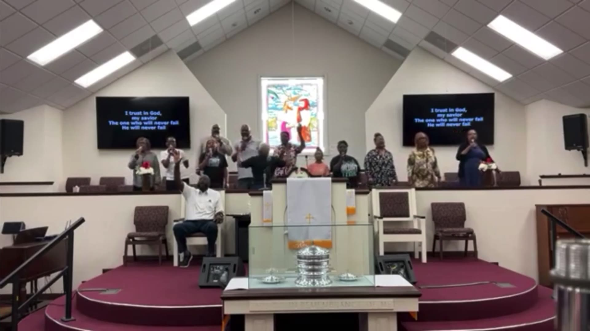
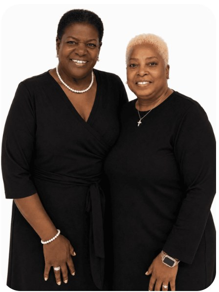
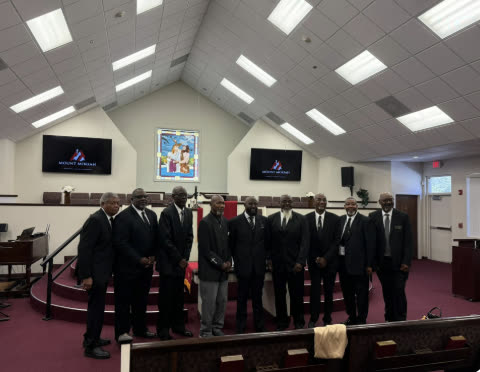
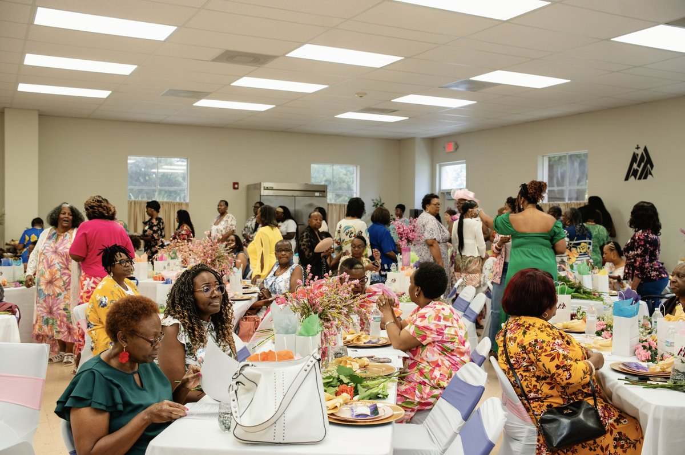
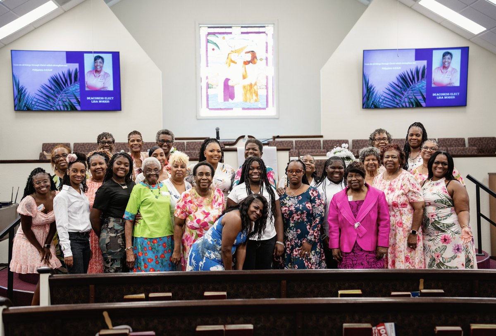
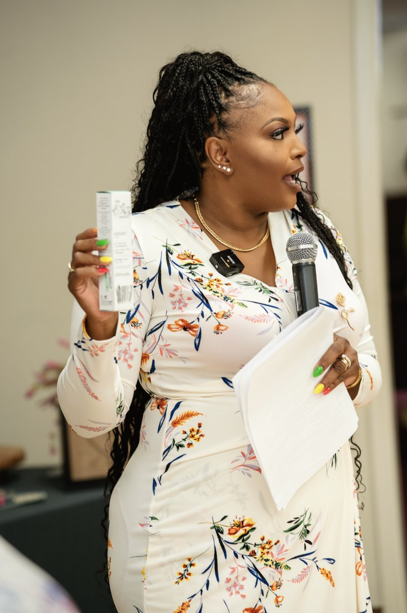
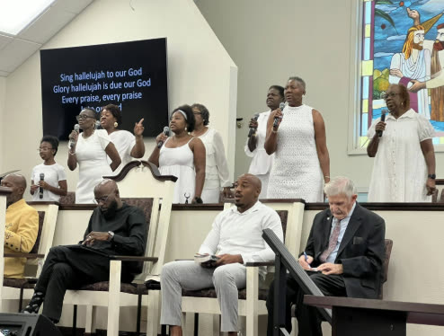

Mount Moriah Missionary Baptist Church
Find Your Place
From our youngest students to our most seasoned saints, every ministry at Mount Moriah exists for one purpose: to help people know Christ, grow in Him, and serve with the gifts God has given them.

Next Gen Youth Department
The Next Gen Youth Department exists to help young people build a faith that is personal, lasting, and rooted in the Word of God.
Through biblical teaching, worship, discipleship, fellowship, and service, we create opportunities for students to grow in their relationship with Christ, develop godly character, and discover how their gifts can be used for His glory.
Our desire is not simply to prepare young people for the future, but to remind them that they are a vital part of the church today. We are committed to cultivating a generation that knows God, lives with conviction, leads with courage, and serves with compassion.

Mount Moriah Deacon's Ministry
The Mount Moriah Deacon's Ministry exists to equip men to become faithful followers of Christ and godly leaders in their homes, workplaces, church, and community.
Through prayer, biblical teaching, fellowship, and accountability, men are encouraged to deepen their relationship with God, strengthen one another, and live with integrity in every area of life.
We believe strong men of faith help build strong families, healthy churches, and thriving communities. Our goal is to create a brotherhood where men can grow, be challenged, receive encouragement, and walk confidently in the purpose God has given them.



Women of the Word
Women of the Word exists to cultivate a Christ-centered sisterhood where women can grow spiritually, build meaningful relationships, and encourage one another through every season of life.
Through Bible study, prayer, mentorship, fellowship, and service, women are equipped to deepen their faith, embrace their God-given identity, and live with wisdom, grace, and purpose.
We are committed to creating a community where women feel seen, supported, and strengthened as they pursue Christ together and use their lives to make a lasting impact in their families, church, and community.

Music Ministry
The Mount Moriah Music Ministry exists to lead the church in worship that glorifies God, strengthens faith, and prepares hearts to receive His Word.
More than music, our ministry is a community of worshipers committed to serving with humility, unity, prayer, and excellence. Musicians, vocalists, worship leaders, and technical creatives are given opportunities to develop their gifts while growing in spiritual maturity and Christ-centered leadership.
Our desire is to create an atmosphere where the congregation can respond to God together, encounter His presence, and lift one unified sound of praise. In everything we do, we seek to honor God, serve His people, and cultivate worship as a way of life.
More Ways to Serve
Interested in serving? Select a ministry below and tell us a little about yourself. Our church office will follow up with next steps.
Every ministry at Mount Moriah is an open door. Come worship with us and discover where you fit.
Serve With Us
Tell us a little about yourself and our church office will follow up with next steps.
We received your interest and our church office will reach out with next steps. We are excited to serve alongside you.